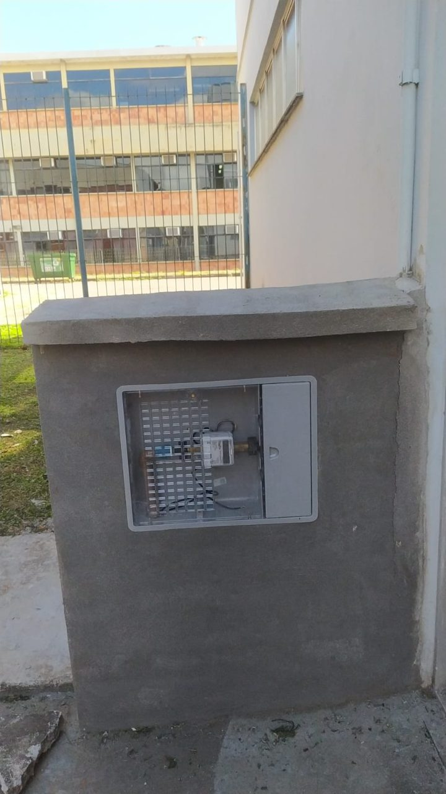

Hidrômetro 1
Medidor com telemetria instalado na entrada de água do Prédio 9C do Centro de Tecnologia da UFSM, no âmbito do programa PUMA/CT. O módulo publica a leitura a cada ~5 minutos no sistema de monitoramento da Spinon, e este painel agrega o consumo hora a hora desde 22/10/2024.
Use as abas para ver o consumo por hora, dia, semana e mês, o perfil médio por dia da semana e o perfil de ocupação do prédio.
Os dados são atualizados automaticamente a cada hora. A hora corrente só entra quando fecha.
Ver tabela
| Mês | Consumo (m³) |
|---|
Perfil de consumo médio por hora ·
Semestre:
Perfil de ocupação por meia hora ·
Ocupantes estimados pelo ensalamento do semestre: soma das vagas ocupadas (matriculados) das turmas em aula no prédio em cada meia hora.